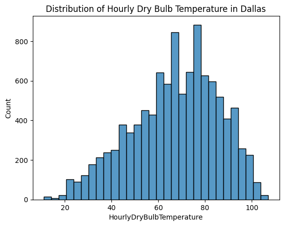
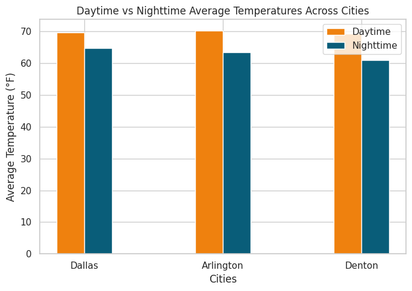
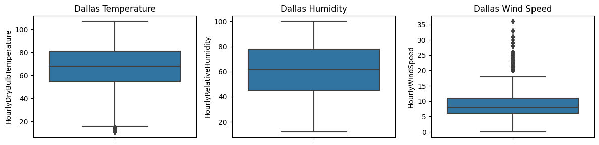
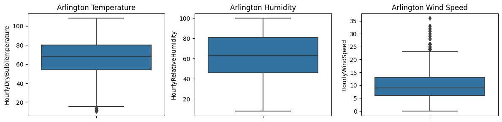
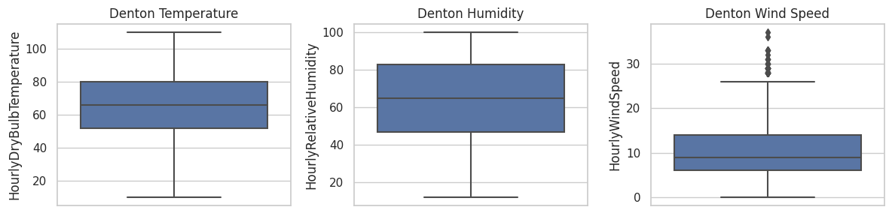
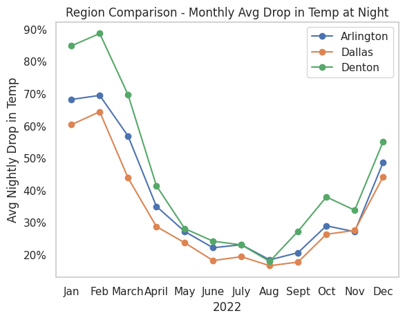
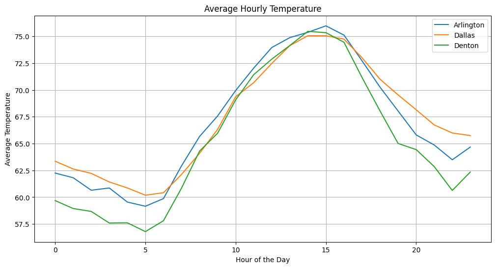
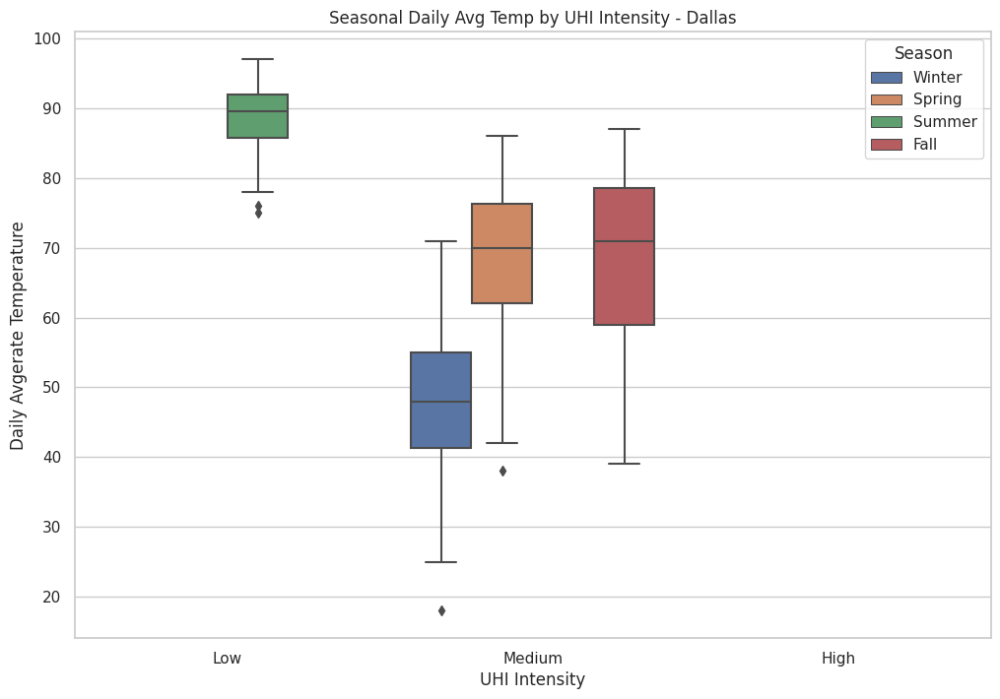
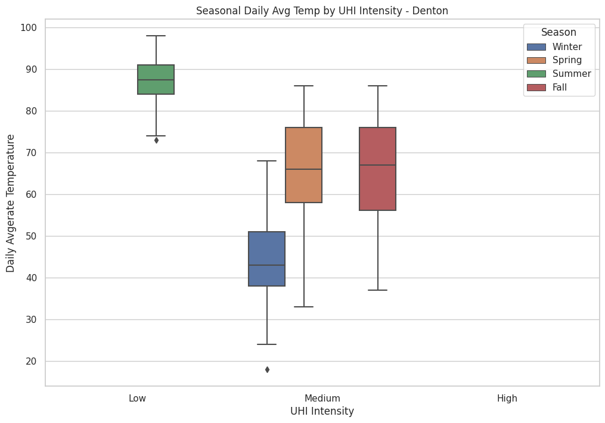

# Loading the Libraries
import pandas as pd
import numpy as np
from sklearn.impute import KNNImputer
from sklearn.preprocessing import LabelEncoder
from sklearn.model_selection import train_test_split
from sklearn.ensemble import RandomForestClassifier
from sklearn.tree import DecisionTreeClassifier
from xgboost import XGBClassifier
from sklearn.ensemble import GradientBoostingClassifier
from sklearn.metrics import classification_report, confusion_matrix
import matplotlib.pyplot as plt
import seaborn as sns
import matplotlib.ticker as mtickData Pre Processing
import pandas as pd
# Load the datasets from CSV files
dallas = pd.read_csv('https://raw.githubusercontent.com/INFO-523-Exercises/project-final-Byte-Busters/main/data/Dallas.csv', header='infer' ,low_memory=False)
arlington = pd.read_csv('https://raw.githubusercontent.com/INFO-523-Exercises/project-final-Byte-Busters/main/data/Arlington.csv', header='infer' ,low_memory=False)
denton = pd.read_csv('https://raw.githubusercontent.com/INFO-523-Exercises/project-final-Byte-Busters/main/data/Denton.csv', header='infer' ,low_memory=False)# Convert the 'Date' column to datetime format
arlington['DATE'] = pd.to_datetime(arlington['DATE'])
dallas['DATE'] = pd.to_datetime(dallas['DATE'])
denton['DATE'] = pd.to_datetime(denton['DATE'])cols_to_impute = ['HourlyDryBulbTemperature','HourlyWetBulbTemperature','HourlyRelativeHumidity','HourlyDewPointTemperature','HourlyPrecipitation','HourlySeaLevelPressure','HourlyStationPressure','HourlyWindSpeed','HourlyWindDirection']Dallas
dallas.head()| STATION | DATE | LATITUDE | LONGITUDE | ELEVATION | NAME | REPORT_TYPE | SOURCE | HourlyAltimeterSetting | HourlyDewPointTemperature | ... | BackupDirection | BackupDistance | BackupDistanceUnit | BackupElements | BackupElevation | BackupEquipment | BackupLatitude | BackupLongitude | BackupName | WindEquipmentChangeDate | |
|---|---|---|---|---|---|---|---|---|---|---|---|---|---|---|---|---|---|---|---|---|---|
| 0 | 72258013960 | 2022-01-01 00:53:00 | 32.83839 | -96.83583 | 147.6 | DALLAS FAA AIRPORT, TX US | FM-15 | 7 | 29.65 | 63 | ... | NaN | NaN | NaN | NaN | NaN | NaN | NaN | NaN | NaN | 2009-05-28 |
| 1 | 72258013960 | 2022-01-01 01:53:00 | 32.83839 | -96.83583 | 147.6 | DALLAS FAA AIRPORT, TX US | FM-15 | 7 | 29.64 | 63 | ... | NaN | NaN | NaN | NaN | NaN | NaN | NaN | NaN | NaN | 2009-05-28 |
| 2 | 72258013960 | 2022-01-01 02:53:00 | 32.83839 | -96.83583 | 147.6 | DALLAS FAA AIRPORT, TX US | FM-15 | 7 | 29.63 | 63 | ... | NaN | NaN | NaN | NaN | NaN | NaN | NaN | NaN | NaN | 2009-05-28 |
| 3 | 72258013960 | 2022-01-01 03:53:00 | 32.83839 | -96.83583 | 147.6 | DALLAS FAA AIRPORT, TX US | FM-15 | 7 | 29.63 | 61 | ... | NaN | NaN | NaN | NaN | NaN | NaN | NaN | NaN | NaN | 2009-05-28 |
| 4 | 72258013960 | 2022-01-01 04:53:00 | 32.83839 | -96.83583 | 147.6 | DALLAS FAA AIRPORT, TX US | FM-15 | 7 | 29.62 | 59 | ... | NaN | NaN | NaN | NaN | NaN | NaN | NaN | NaN | NaN | 2009-05-28 |
5 rows × 125 columns
dallas.describe()| STATION | LATITUDE | LONGITUDE | ELEVATION | SOURCE | HourlyPressureChange | HourlyPressureTendency | HourlyRelativeHumidity | HourlyWetBulbTemperature | HourlyWindGustSpeed | ... | ShortDurationPrecipitationValue180 | BackupDirection | BackupDistance | BackupDistanceUnit | BackupElements | BackupElevation | BackupEquipment | BackupLatitude | BackupLongitude | BackupName | |
|---|---|---|---|---|---|---|---|---|---|---|---|---|---|---|---|---|---|---|---|---|---|
| count | 1.053600e+04 | 10536.00000 | 10536.00000 | 1.053600e+04 | 10536.000000 | 2899.000000 | 2899.000000 | 10150.000000 | 10058.000000 | 3159.000000 | ... | 8.000000 | 0.0 | 0.0 | 0.0 | 0.0 | 0.0 | 0.0 | 0.0 | 0.0 | 0.0 |
| mean | 7.225801e+10 | 32.83839 | -96.83583 | 1.476000e+02 | 6.916002 | -0.000114 | 4.208348 | 61.352512 | 58.328097 | 25.155112 | ... | 1.387500 | NaN | NaN | NaN | NaN | NaN | NaN | NaN | NaN | NaN |
| std | 0.000000e+00 | 0.00000 | 0.00000 | 2.842306e-14 | 0.358855 | 0.045213 | 2.737678 | 21.693770 | 15.638864 | 5.774307 | ... | 1.423725 | NaN | NaN | NaN | NaN | NaN | NaN | NaN | NaN | NaN |
| min | 7.225801e+10 | 32.83839 | -96.83583 | 1.476000e+02 | 4.000000 | -0.250000 | 0.000000 | 12.000000 | 8.000000 | 16.000000 | ... | 0.040000 | NaN | NaN | NaN | NaN | NaN | NaN | NaN | NaN | NaN |
| 25% | 7.225801e+10 | 32.83839 | -96.83583 | 1.476000e+02 | 7.000000 | -0.030000 | 1.000000 | 44.000000 | 47.000000 | 21.000000 | ... | 0.795000 | NaN | NaN | NaN | NaN | NaN | NaN | NaN | NaN | NaN |
| 50% | 7.225801e+10 | 32.83839 | -96.83583 | 1.476000e+02 | 7.000000 | 0.000000 | 3.000000 | 61.000000 | 62.000000 | 24.000000 | ... | 1.030000 | NaN | NaN | NaN | NaN | NaN | NaN | NaN | NaN | NaN |
| 75% | 7.225801e+10 | 32.83839 | -96.83583 | 1.476000e+02 | 7.000000 | 0.030000 | 6.000000 | 79.000000 | 73.000000 | 29.000000 | ... | 1.465000 | NaN | NaN | NaN | NaN | NaN | NaN | NaN | NaN | NaN |
| max | 7.225801e+10 | 32.83839 | -96.83583 | 1.476000e+02 | 7.000000 | 0.170000 | 8.000000 | 100.000000 | 81.000000 | 52.000000 | ... | 4.700000 | NaN | NaN | NaN | NaN | NaN | NaN | NaN | NaN | NaN |
8 rows × 89 columns
# Specifying columns for data type conversion\
cols_dallas = ['HourlyDryBulbTemperature','HourlyDewPointTemperature','HourlyPrecipitation','HourlySeaLevelPressure','HourlyStationPressure','HourlyWindDirection']# Loop through columns in cols_dallas, extract the numeric part, and convert to float
for col in cols_dallas:
dallas[col] = dallas[col].str.extract('(\d+)', expand=False).astype(float)# Checking for missing values in all the relevant columns
for col in cols_to_impute:
missing_values = dallas[col].isnull().sum()
print(f"Missing values in {col}: {missing_values}")Missing values in HourlyDryBulbTemperature: 384
Missing values in HourlyWetBulbTemperature: 478
Missing values in HourlyRelativeHumidity: 386
Missing values in HourlyDewPointTemperature: 386
Missing values in HourlyPrecipitation: 1884
Missing values in HourlySeaLevelPressure: 1801
Missing values in HourlyStationPressure: 476
Missing values in HourlyWindSpeed: 388
Missing values in HourlyWindDirection: 1090# Initialize the KNN Imputer
imputer = KNNImputer(n_neighbors=5)
# Apply KNN Imputation
dallas[cols_to_impute] = imputer.fit_transform(dallas[cols_to_impute])# Checking for missing values in all the relevant columns after Imputation
for col in cols_to_impute:
missing_values = dallas[col].isnull().sum()
print(f"Missing values in {col}: {missing_values}")Missing values in HourlyDryBulbTemperature: 0
Missing values in HourlyWetBulbTemperature: 0
Missing values in HourlyRelativeHumidity: 0
Missing values in HourlyDewPointTemperature: 0
Missing values in HourlyPrecipitation: 0
Missing values in HourlySeaLevelPressure: 0
Missing values in HourlyStationPressure: 0
Missing values in HourlyWindSpeed: 0
Missing values in HourlyWindDirection: 0Arlington
arlington.head()| STATION | DATE | LATITUDE | LONGITUDE | ELEVATION | NAME | REPORT_TYPE | SOURCE | HourlyAltimeterSetting | HourlyDewPointTemperature | ... | BackupDirection | BackupDistance | BackupDistanceUnit | BackupElements | BackupElevation | BackupEquipment | BackupLatitude | BackupLongitude | BackupName | WindEquipmentChangeDate | |
|---|---|---|---|---|---|---|---|---|---|---|---|---|---|---|---|---|---|---|---|---|---|
| 0 | 72247953907 | 2022-01-01 00:18:00 | 32.65832 | -97.09509 | 179.7 | ARLINGTON MUNICIPAL AIRPORT, TX US | FM-16 | 7 | 29.66 | 65 | ... | NaN | NaN | NaN | NaN | NaN | NaN | NaN | NaN | NaN | 2007-02-26 |
| 1 | 72247953907 | 2022-01-01 00:27:00 | 32.65832 | -97.09509 | 179.7 | ARLINGTON MUNICIPAL AIRPORT, TX US | FM-16 | 7 | 29.66 | 65 | ... | NaN | NaN | NaN | NaN | NaN | NaN | NaN | NaN | NaN | 2007-02-26 |
| 2 | 72247953907 | 2022-01-01 00:53:00 | 32.65832 | -97.09509 | 179.7 | ARLINGTON MUNICIPAL AIRPORT, TX US | FM-15 | 7 | 29.65 | 63 | ... | NaN | NaN | NaN | NaN | NaN | NaN | NaN | NaN | NaN | 2007-02-26 |
| 3 | 72247953907 | 2022-01-01 01:53:00 | 32.65832 | -97.09509 | 179.7 | ARLINGTON MUNICIPAL AIRPORT, TX US | FM-15 | 7 | 29.65 | 63 | ... | NaN | NaN | NaN | NaN | NaN | NaN | NaN | NaN | NaN | 2007-02-26 |
| 4 | 72247953907 | 2022-01-01 02:53:00 | 32.65832 | -97.09509 | 179.7 | ARLINGTON MUNICIPAL AIRPORT, TX US | FM-15 | 7 | 29.63 | 63 | ... | NaN | NaN | NaN | NaN | NaN | NaN | NaN | NaN | NaN | 2007-02-26 |
5 rows × 125 columns
arlington.describe()| STATION | LATITUDE | LONGITUDE | ELEVATION | SOURCE | HourlyPressureChange | HourlyPressureTendency | HourlyWindGustSpeed | Sunrise | Sunset | ... | ShortDurationPrecipitationValue150 | BackupDirection | BackupDistance | BackupDistanceUnit | BackupElements | BackupElevation | BackupEquipment | BackupLatitude | BackupLongitude | BackupName | |
|---|---|---|---|---|---|---|---|---|---|---|---|---|---|---|---|---|---|---|---|---|---|
| count | 1.093800e+04 | 10938.00000 | 1.093800e+04 | 1.093800e+04 | 10938.000000 | 2863.000000 | 2863.000000 | 2851.000000 | 365.000000 | 365.000000 | ... | 12.000000 | 0.0 | 0.0 | 0.0 | 0.0 | 0.0 | 0.0 | 0.0 | 0.0 | 0.0 |
| mean | 7.224795e+10 | 32.65832 | -9.709509e+01 | 1.797000e+02 | 6.904553 | 0.000014 | 4.223192 | 26.471414 | 619.610959 | 1836.087671 | ... | 0.935833 | NaN | NaN | NaN | NaN | NaN | NaN | NaN | NaN | NaN |
| std | 0.000000e+00 | 0.00000 | 1.421150e-14 | 2.842301e-14 | 0.404595 | 0.044873 | 2.748253 | 5.985668 | 75.262156 | 78.326753 | ... | 1.013934 | NaN | NaN | NaN | NaN | NaN | NaN | NaN | NaN | NaN |
| min | 7.224795e+10 | 32.65832 | -9.709509e+01 | 1.797000e+02 | 4.000000 | -0.240000 | 0.000000 | 16.000000 | 520.000000 | 1722.000000 | ... | 0.070000 | NaN | NaN | NaN | NaN | NaN | NaN | NaN | NaN | NaN |
| 25% | 7.224795e+10 | 32.65832 | -9.709509e+01 | 1.797000e+02 | 7.000000 | -0.030000 | 1.000000 | 22.000000 | 542.000000 | 1750.000000 | ... | 0.195000 | NaN | NaN | NaN | NaN | NaN | NaN | NaN | NaN | NaN |
| 50% | 7.224795e+10 | 32.65832 | -9.709509e+01 | 1.797000e+02 | 7.000000 | 0.000000 | 3.000000 | 25.000000 | 620.000000 | 1836.000000 | ... | 0.710000 | NaN | NaN | NaN | NaN | NaN | NaN | NaN | NaN | NaN |
| 75% | 7.224795e+10 | 32.65832 | -9.709509e+01 | 1.797000e+02 | 7.000000 | 0.030000 | 6.000000 | 30.000000 | 705.000000 | 1918.000000 | ... | 1.155000 | NaN | NaN | NaN | NaN | NaN | NaN | NaN | NaN | NaN |
| max | 7.224795e+10 | 32.65832 | -9.709509e+01 | 1.797000e+02 | 7.000000 | 0.160000 | 8.000000 | 59.000000 | 731.000000 | 1940.000000 | ... | 3.680000 | NaN | NaN | NaN | NaN | NaN | NaN | NaN | NaN | NaN |
8 rows × 72 columns
# Specifying columns for data type conversion
cols_arlington = ['HourlyDryBulbTemperature','HourlyWetBulbTemperature','HourlyDewPointTemperature','HourlyStationPressure','HourlyPrecipitation','HourlyWindSpeed','HourlySeaLevelPressure','HourlyWindDirection', 'HourlyRelativeHumidity']# Loop through columns in cols_arlington, extract the numeric part, and convert to float
for col in cols_arlington:
arlington[col] = arlington[col].str.extract('(\d+)', expand=False).astype(float)# Checking for missing values in all the relevant columns
for col in cols_to_impute:
missing_values = arlington[col].isnull().sum()
print(f"Missing values in {col}: {missing_values}")Missing values in HourlyDryBulbTemperature: 398
Missing values in HourlyWetBulbTemperature: 549
Missing values in HourlyRelativeHumidity: 398
Missing values in HourlyDewPointTemperature: 398
Missing values in HourlyPrecipitation: 2410
Missing values in HourlySeaLevelPressure: 2251
Missing values in HourlyStationPressure: 529
Missing values in HourlyWindSpeed: 482
Missing values in HourlyWindDirection: 836# Initialize the KNN Imputer
imputer = KNNImputer(n_neighbors=5)
# Apply KNN Imputation
arlington[cols_to_impute] = imputer.fit_transform(arlington[cols_to_impute])# Checking for missing values in all the relevant columns after Imputation
for col in cols_to_impute:
missing_values = arlington[col].isnull().sum()
print(f"Missing values in {col}: {missing_values}")Missing values in HourlyDryBulbTemperature: 0
Missing values in HourlyWetBulbTemperature: 0
Missing values in HourlyRelativeHumidity: 0
Missing values in HourlyDewPointTemperature: 0
Missing values in HourlyPrecipitation: 0
Missing values in HourlySeaLevelPressure: 0
Missing values in HourlyStationPressure: 0
Missing values in HourlyWindSpeed: 0
Missing values in HourlyWindDirection: 0Denton
denton.head()| STATION | DATE | LATITUDE | LONGITUDE | ELEVATION | NAME | REPORT_TYPE | SOURCE | HourlyAltimeterSetting | HourlyDewPointTemperature | ... | BackupDirection | BackupDistance | BackupDistanceUnit | BackupElements | BackupElevation | BackupEquipment | BackupLatitude | BackupLongitude | BackupName | WindEquipmentChangeDate | |
|---|---|---|---|---|---|---|---|---|---|---|---|---|---|---|---|---|---|---|---|---|---|
| 0 | 72258903991 | 2022-01-01 00:18:00 | 33.20883 | -97.19922 | 194.6 | DENTON MUNICPAL AIRPORT, TX US | FM-16 | 7 | 29.66 | 60 | ... | NaN | NaN | NaN | NaN | NaN | NaN | NaN | NaN | NaN | 2007-02-27 |
| 1 | 72258903991 | 2022-01-01 00:53:00 | 33.20883 | -97.19922 | 194.6 | DENTON MUNICPAL AIRPORT, TX US | FM-15 | 7 | 29.66 | 59 | ... | NaN | NaN | NaN | NaN | NaN | NaN | NaN | NaN | NaN | 2007-02-27 |
| 2 | 72258903991 | 2022-01-01 01:53:00 | 33.20883 | -97.19922 | 194.6 | DENTON MUNICPAL AIRPORT, TX US | FM-15 | 7 | 29.63 | 60 | ... | NaN | NaN | NaN | NaN | NaN | NaN | NaN | NaN | NaN | 2007-02-27 |
| 3 | 72258903991 | 2022-01-01 02:53:00 | 33.20883 | -97.19922 | 194.6 | DENTON MUNICPAL AIRPORT, TX US | FM-15 | 7 | 29.63 | 60 | ... | NaN | NaN | NaN | NaN | NaN | NaN | NaN | NaN | NaN | 2007-02-27 |
| 4 | 72258903991 | 2022-01-01 03:53:00 | 33.20883 | -97.19922 | 194.6 | DENTON MUNICPAL AIRPORT, TX US | FM-15 | 7 | 29.63 | 60 | ... | NaN | NaN | NaN | NaN | NaN | NaN | NaN | NaN | NaN | 2007-02-27 |
5 rows × 125 columns
denton.describe()| STATION | LATITUDE | LONGITUDE | ELEVATION | SOURCE | HourlyPressureChange | HourlyPressureTendency | HourlyRelativeHumidity | HourlySeaLevelPressure | HourlyWetBulbTemperature | ... | ShortDurationPrecipitationValue180 | BackupDirection | BackupDistance | BackupDistanceUnit | BackupElements | BackupElevation | BackupEquipment | BackupLatitude | BackupLongitude | BackupName | |
|---|---|---|---|---|---|---|---|---|---|---|---|---|---|---|---|---|---|---|---|---|---|
| count | 1.080800e+04 | 1.080800e+04 | 1.080800e+04 | 1.080800e+04 | 10808.000000 | 2919.000000 | 2919.000000 | 10423.000000 | 8750.000000 | 10292.000000 | ... | 11.000000 | 0.0 | 0.0 | 0.0 | 0.0 | 0.0 | 0.0 | 0.0 | 0.0 | 0.0 |
| mean | 7.225890e+10 | 3.320883e+01 | -9.719922e+01 | 1.946000e+02 | 6.906643 | -0.000106 | 4.254539 | 64.744891 | 30.012730 | 56.977264 | ... | 0.852727 | NaN | NaN | NaN | NaN | NaN | NaN | NaN | NaN | NaN |
| std | 0.000000e+00 | 7.105756e-15 | 2.842302e-14 | 5.684605e-14 | 0.395309 | 0.045438 | 2.732153 | 22.760395 | 0.215588 | 16.311701 | ... | 0.693903 | NaN | NaN | NaN | NaN | NaN | NaN | NaN | NaN | NaN |
| min | 7.225890e+10 | 3.320883e+01 | -9.719922e+01 | 1.946000e+02 | 4.000000 | -0.270000 | 0.000000 | 12.000000 | 29.370000 | 7.000000 | ... | 0.010000 | NaN | NaN | NaN | NaN | NaN | NaN | NaN | NaN | NaN |
| 25% | 7.225890e+10 | 3.320883e+01 | -9.719922e+01 | 1.946000e+02 | 7.000000 | -0.030000 | 2.000000 | 47.000000 | 29.880000 | 45.000000 | ... | 0.345000 | NaN | NaN | NaN | NaN | NaN | NaN | NaN | NaN | NaN |
| 50% | 7.225890e+10 | 3.320883e+01 | -9.719922e+01 | 1.946000e+02 | 7.000000 | 0.000000 | 3.000000 | 67.000000 | 29.980000 | 61.000000 | ... | 0.730000 | NaN | NaN | NaN | NaN | NaN | NaN | NaN | NaN | NaN |
| 75% | 7.225890e+10 | 3.320883e+01 | -9.719922e+01 | 1.946000e+02 | 7.000000 | 0.030000 | 6.000000 | 84.000000 | 30.130000 | 72.000000 | ... | 1.280000 | NaN | NaN | NaN | NaN | NaN | NaN | NaN | NaN | NaN |
| max | 7.225890e+10 | 3.320883e+01 | -9.719922e+01 | 1.946000e+02 | 7.000000 | 0.170000 | 8.000000 | 100.000000 | 30.820000 | 80.000000 | ... | 2.360000 | NaN | NaN | NaN | NaN | NaN | NaN | NaN | NaN | NaN |
8 rows × 79 columns
# Specifying columns for data type conversion
cols_denton = ['HourlyDryBulbTemperature','HourlyDewPointTemperature','HourlyStationPressure','HourlyPrecipitation','HourlyWindSpeed','HourlyWindDirection']# Loop through columns in cols_denton, extract the numeric part, and convert to float
for col in cols_denton:
denton[col] = denton[col].str.extract('(\d+)', expand=False).astype(float)# Checking for missing values in all the relevant columns
for col in cols_to_impute:
missing_values = denton[col].isnull().sum()
print(f"Missing values in {col}: {missing_values}")Missing values in HourlyDryBulbTemperature: 385
Missing values in HourlyWetBulbTemperature: 516
Missing values in HourlyRelativeHumidity: 385
Missing values in HourlyDewPointTemperature: 383
Missing values in HourlyPrecipitation: 2059
Missing values in HourlySeaLevelPressure: 2058
Missing values in HourlyStationPressure: 508
Missing values in HourlyWindSpeed: 434
Missing values in HourlyWindDirection: 693# Initialize the KNN Imputer
imputer = KNNImputer(n_neighbors=5)
# Apply KNN Imputation
denton[cols_to_impute] = imputer.fit_transform(denton[cols_to_impute])# Checking for missing values in all the relevant columns after Imputation
for col in cols_to_impute:
missing_values = denton[col].isnull().sum()
print(f"Missing values in {col}: {missing_values}")Missing values in HourlyDryBulbTemperature: 0
Missing values in HourlyWetBulbTemperature: 0
Missing values in HourlyRelativeHumidity: 0
Missing values in HourlyDewPointTemperature: 0
Missing values in HourlyPrecipitation: 0
Missing values in HourlySeaLevelPressure: 0
Missing values in HourlyStationPressure: 0
Missing values in HourlyWindSpeed: 0
Missing values in HourlyWindDirection: 0EDA: Exploratory Data Analysis
def extract_time_features(df):
df['Hour'] = df['DATE'].dt.hour
df['Time'] = df['DATE'].dt.strftime('%H:%M:%S')
df['Date'] = df['DATE'].dt.date
df['DayOfWeek'] = df['DATE'].dt.dayofweek
df['Month'] = df['DATE'].dt.month
df['Season'] = df['Month'].apply(lambda x: (x%12 + 3)//3)
seasons = {1: 'Winter', 2: 'Spring', 3: 'Summer', 4: 'Fall'}
df['Season'] = df['Season'].map(seasons)
# Apply the time feature extraction to each dataset
extract_time_features(arlington)
extract_time_features(dallas)
extract_time_features(denton)
print(arlington) STATION DATE LATITUDE LONGITUDE ELEVATION \
0 72247953907 2022-01-01 00:18:00 32.65832 -97.09509 179.7
1 72247953907 2022-01-01 00:27:00 32.65832 -97.09509 179.7
2 72247953907 2022-01-01 00:53:00 32.65832 -97.09509 179.7
3 72247953907 2022-01-01 01:53:00 32.65832 -97.09509 179.7
4 72247953907 2022-01-01 02:53:00 32.65832 -97.09509 179.7
... ... ... ... ... ...
10933 72247953907 2022-12-31 21:53:00 32.65832 -97.09509 179.7
10934 72247953907 2022-12-31 22:53:00 32.65832 -97.09509 179.7
10935 72247953907 2022-12-31 23:53:00 32.65832 -97.09509 179.7
10936 72247953907 2022-12-31 23:59:00 32.65832 -97.09509 179.7
10937 72247953907 2022-12-31 23:59:00 32.65832 -97.09509 179.7
NAME REPORT_TYPE SOURCE \
0 ARLINGTON MUNICIPAL AIRPORT, TX US FM-16 7
1 ARLINGTON MUNICIPAL AIRPORT, TX US FM-16 7
2 ARLINGTON MUNICIPAL AIRPORT, TX US FM-15 7
3 ARLINGTON MUNICIPAL AIRPORT, TX US FM-15 7
4 ARLINGTON MUNICIPAL AIRPORT, TX US FM-15 7
... ... ... ...
10933 ARLINGTON MUNICIPAL AIRPORT, TX US FM-15 7
10934 ARLINGTON MUNICIPAL AIRPORT, TX US FM-15 7
10935 ARLINGTON MUNICIPAL AIRPORT, TX US FM-15 7
10936 ARLINGTON MUNICIPAL AIRPORT, TX US SOD 6
10937 ARLINGTON MUNICIPAL AIRPORT, TX US SOM 6
HourlyAltimeterSetting HourlyDewPointTemperature ... BackupLatitude \
0 29.66 65.000000 ... NaN
1 29.66 65.000000 ... NaN
2 29.65 63.000000 ... NaN
3 29.65 63.000000 ... NaN
4 29.63 63.000000 ... NaN
... ... ... ... ...
10933 29.83 44.000000 ... NaN
10934 29.84 44.000000 ... NaN
10935 29.84 44.000000 ... NaN
10936 NaN 51.215844 ... NaN
10937 NaN 51.215844 ... NaN
BackupLongitude BackupName WindEquipmentChangeDate Hour Time \
0 NaN NaN 2007-02-26 0 00:18:00
1 NaN NaN 2007-02-26 0 00:27:00
2 NaN NaN 2007-02-26 0 00:53:00
3 NaN NaN 2007-02-26 1 01:53:00
4 NaN NaN 2007-02-26 2 02:53:00
... ... ... ... ... ...
10933 NaN NaN 2007-02-26 21 21:53:00
10934 NaN NaN 2007-02-26 22 22:53:00
10935 NaN NaN 2007-02-26 23 23:53:00
10936 NaN NaN 2007-02-26 23 23:59:00
10937 NaN NaN 2007-02-26 23 23:59:00
Date DayOfWeek Month Season
0 2022-01-01 5 1 Winter
1 2022-01-01 5 1 Winter
2 2022-01-01 5 1 Winter
3 2022-01-01 5 1 Winter
4 2022-01-01 5 1 Winter
... ... ... ... ...
10933 2022-12-31 5 12 Winter
10934 2022-12-31 5 12 Winter
10935 2022-12-31 5 12 Winter
10936 2022-12-31 5 12 Winter
10937 2022-12-31 5 12 Winter
[10938 rows x 131 columns]Basic Statistical Tests
# For Dallas
print("Basic Statistics for Dallas:")
print(dallas[['HourlyDryBulbTemperature','HourlyWetBulbTemperature', 'HourlyDewPointTemperature', 'HourlyPrecipitation',
'HourlySeaLevelPressure', 'HourlyStationPressure', 'HourlyRelativeHumidity',
'HourlyWindSpeed', 'HourlyWindDirection']].describe())Basic Statistics for Dallas:
HourlyDryBulbTemperature HourlyWetBulbTemperature \
count 10536.000000 10536.000000
mean 67.197414 58.333991
std 18.608601 15.293785
min 11.000000 8.000000
25% 55.000000 48.000000
50% 68.000000 61.000000
75% 81.000000 72.000000
max 107.000000 81.000000
HourlyDewPointTemperature HourlyPrecipitation HourlySeaLevelPressure \
count 10536.000000 10536.000000 10536.000000
mean 51.414822 0.001489 29.453747
std 17.581486 0.033942 0.470971
min 0.000000 0.000000 29.000000
25% 38.000000 0.000000 29.000000
50% 56.000000 0.000000 29.200000
75% 66.000000 0.000000 30.000000
max 76.000000 1.000000 30.000000
HourlyStationPressure HourlyRelativeHumidity HourlyWindSpeed \
count 10536.000000 10536.000000 10536.000000
mean 29.009181 61.355909 8.742737
std 0.127099 21.295024 5.102282
min 28.000000 12.000000 0.000000
25% 29.000000 45.000000 6.000000
50% 29.000000 61.352512 8.000000
75% 29.000000 78.000000 11.000000
max 30.000000 100.000000 36.000000
HourlyWindDirection
count 10536.000000
mean 164.009625
std 97.066256
min 0.000000
25% 110.000000
50% 160.000000
75% 200.000000
max 360.000000 # For Arlington
print("Basic Statistics for Arlington:")
print(arlington[['HourlyDryBulbTemperature', 'HourlyWetBulbTemperature', 'HourlyDewPointTemperature', 'HourlyPrecipitation',
'HourlySeaLevelPressure', 'HourlyStationPressure', 'HourlyRelativeHumidity',
'HourlyWindSpeed', 'HourlyWindDirection']].describe())Basic Statistics for Arlington:
HourlyDryBulbTemperature HourlyWetBulbTemperature \
count 10938.000000 10938.000000
mean 66.799237 58.075903
std 18.621383 15.162909
min 11.000000 8.000000
25% 54.250000 48.000000
50% 68.000000 61.000000
75% 80.000000 72.000000
max 108.000000 79.000000
HourlyDewPointTemperature HourlyPrecipitation HourlySeaLevelPressure \
count 10938.000000 10938.000000 10938.000000
mean 51.249222 0.001719 29.441497
std 17.430900 0.040534 0.465324
min 0.000000 0.000000 29.000000
25% 39.000000 0.000000 29.000000
50% 56.000000 0.000000 29.200000
75% 66.000000 0.000000 30.000000
max 77.000000 1.000000 30.000000
HourlyStationPressure HourlyRelativeHumidity HourlyWindSpeed \
count 10938.000000 10938.000000 10938.000000
mean 28.971671 62.252016 9.088201
std 0.170122 21.772457 5.689781
min 28.000000 8.000000 0.000000
25% 29.000000 46.000000 6.000000
50% 29.000000 63.000000 9.000000
75% 29.000000 81.000000 13.000000
max 30.000000 100.000000 36.000000
HourlyWindDirection
count 10938.000000
mean 161.875966
std 102.341655
min 0.000000
25% 110.000000
50% 160.000000
75% 200.000000
max 360.000000 # For Denton
print("Basic Statistics for Denton:")
print(denton[['HourlyDryBulbTemperature', 'HourlyWetBulbTemperature', 'HourlyDewPointTemperature', 'HourlyPrecipitation',
'HourlySeaLevelPressure', 'HourlyStationPressure', 'HourlyRelativeHumidity',
'HourlyWindSpeed', 'HourlyWindDirection']].describe())Basic Statistics for Denton:
HourlyDryBulbTemperature HourlyWetBulbTemperature \
count 10808.000000 10808.000000
mean 65.053764 56.960310
std 19.644345 15.936749
min 10.000000 7.000000
25% 52.000000 46.000000
50% 66.000000 60.000000
75% 80.000000 71.000000
max 110.000000 80.000000
HourlyDewPointTemperature HourlyPrecipitation HourlySeaLevelPressure \
count 10808.000000 10808.000000 10808.000000
mean 50.681699 0.000230 30.005838
std 17.623262 0.013871 0.202828
min 0.000000 0.000000 29.370000
25% 37.000000 0.000000 29.880000
50% 55.000000 0.000000 29.980000
75% 66.000000 0.000000 30.110000
max 76.000000 1.000000 30.820000
HourlyStationPressure HourlyRelativeHumidity HourlyWindSpeed \
count 10808.000000 10808.000000 10808.000000
mean 28.967564 64.737678 9.472105
std 0.181262 22.355446 6.077904
min 28.000000 12.000000 0.000000
25% 29.000000 47.000000 6.000000
50% 29.000000 65.000000 9.000000
75% 29.000000 83.000000 14.000000
max 30.000000 100.000000 37.000000
HourlyWindDirection
count 10808.000000
mean 164.818284
std 107.662173
min 0.000000
25% 100.000000
50% 160.000000
75% 210.000000
max 360.000000
sns.histplot(dallas['HourlyDryBulbTemperature'], bins=30)
plt.title('Distribution of Hourly Dry Bulb Temperature in Dallas')
plt.show()
Temperature difference based on different times of the day
def categorize_day_night(hour):
if 6 <= hour < 18:
return 'Daytime'
else:
return 'Nighttime'
# Apply this function to your datasets
arlington['Day_Night'] = arlington['Hour'].apply(categorize_day_night)
dallas['Day_Night'] = dallas['Hour'].apply(categorize_day_night)
denton['Day_Night'] = denton['Hour'].apply(categorize_day_night)# Calculate average temperatures
arlington_day_night_avg = arlington.groupby('Day_Night')['HourlyDryBulbTemperature'].mean()
dallas_day_night_avg = dallas.groupby('Day_Night')['HourlyDryBulbTemperature'].mean()
denton_day_night_avg = denton.groupby('Day_Night')['HourlyDryBulbTemperature'].mean()# Display the average temperatures
print("Arlington - Day vs Night Avg Temperature:\n", arlington_day_night_avg)
print("Dallas - Day vs Night Avg Temperature:\n", dallas_day_night_avg)
print("Denton - Day vs Night Avg Temperature:\n", denton_day_night_avg)Arlington - Day vs Night Avg Temperature:
Day_Night
Daytime 70.285486
Nighttime 63.472445
Name: HourlyDryBulbTemperature, dtype: float64
Dallas - Day vs Night Avg Temperature:
Day_Night
Daytime 69.709055
Nighttime 64.807656
Name: HourlyDryBulbTemperature, dtype: float64
Denton - Day vs Night Avg Temperature:
Day_Night
Daytime 69.248691
Nighttime 61.061842
Name: HourlyDryBulbTemperature, dtype: float64# Set up for multiple bar plot
bar_width = 0.2 # width of the bars
index = np.arange(3) # Three cities
# Creating the plot
plt.figure(figsize=(7, 5))
plt.bar(index, [dallas_day_night_avg['Daytime'], arlington_day_night_avg['Daytime'],denton_day_night_avg['Daytime']],
bar_width, color='#EF810E', label='Daytime')
plt.bar(index + bar_width, [dallas_day_night_avg['Nighttime'],arlington_day_night_avg['Nighttime'], denton_day_night_avg['Nighttime']],
bar_width, color='#095D79', label='Nighttime')
plt.xlabel('Cities')
plt.ylabel('Average Temperature (°F)')
plt.title('Daytime vs Nighttime Average Temperatures Across Cities')
plt.xticks(index + bar_width / 2, ['Dallas', 'Arlington', 'Denton'])
plt.legend()
# Show the plot
plt.tight_layout()
plt.show()
Key Takeaways:
The smaller difference in nighttime and daytime temperatures in Dallas aligns with a stronger UHI effect, where the urban environment retains more heat.
Arlington, while also urban, shows a slightly more significant temperature drop at night than Dallas, indicating a somewhat less intense UHI effect.
Denton’s larger temperature drop is consistent with rural areas that do not exhibit strong UHI effects.
# Function to plot data
def plot_data(data, city_name):
plt.figure(figsize=(12, 3))
plt.subplot(1, 3, 1)
sns.boxplot(y=data['HourlyDryBulbTemperature'])
plt.title(f'{city_name} Temperature')
plt.subplot(1, 3, 2)
sns.boxplot(y=data['HourlyRelativeHumidity'])
plt.title(f'{city_name} Humidity')
plt.subplot(1, 3, 3)
sns.boxplot(y=data['HourlyWindSpeed'])
plt.title(f'{city_name} Wind Speed')
plt.tight_layout()
plt.show()# Plot for each city
plot_data(dallas, 'Dallas')
plot_data(arlington, 'Arlington')
plot_data(denton, 'Denton')


########################################################################
# Begin Plot for "Region Comparison - Monthly Avg Drop in Temp at Night"
########################################################################
# Remove midnight "23:59:00" and only look at "nighttime" values for all 3 regions
plot_arlington = arlington[(arlington['Time'] != '23:59:00') & (arlington['Day_Night'] == 'Nighttime')].copy()
plot_dallas = dallas[(dallas['Time'] != '23:59:00') & (dallas['Day_Night'] == 'Nighttime')].copy()
plot_denton = denton[(denton['Time'] != '23:59:00') & (denton['Day_Night'] == 'Nighttime')].copy()# Calculate "nightly rate of change" (high vs. low temps) for Arlington
plot_arlington['low'] = plot_arlington.groupby('Date')['HourlyDryBulbTemperature'].transform('min')
plot_arlington['high'] = plot_arlington.groupby('Date')['HourlyDryBulbTemperature'].transform('max')
plot_arlington['rate_of_change'] = (plot_arlington['high'] - plot_arlington['low']) / plot_arlington['low'] * 100
# Calculate "average monthly temperature rate of change" for Arlington
avg_rate_of_change_by_date = plot_arlington.groupby('Date')['rate_of_change'].mean().reset_index()
avg_rate_of_change_by_date['Date'] = pd.to_datetime(avg_rate_of_change_by_date['Date'])
avg_rate_of_change_by_date['Month'] = avg_rate_of_change_by_date['Date'].dt.month
avg_rate_of_change_by_month_arlington = avg_rate_of_change_by_date.groupby('Month')['rate_of_change'].mean().reset_index()# Calculate "nightly rate of change" (high vs. low temps) for Dallas
plot_dallas['low'] = plot_dallas.groupby('Date')['HourlyDryBulbTemperature'].transform('min')
plot_dallas['high'] = plot_dallas.groupby('Date')['HourlyDryBulbTemperature'].transform('max')
plot_dallas['rate_of_change'] = (plot_dallas['high'] - plot_dallas['low']) / plot_dallas['low'] * 100
# Calculate "average monthly temperature rate of change" for Dallas
avg_rate_of_change_by_date = plot_dallas.groupby('Date')['rate_of_change'].mean().reset_index()
avg_rate_of_change_by_date['Date'] = pd.to_datetime(avg_rate_of_change_by_date['Date'])
avg_rate_of_change_by_date['Month'] = avg_rate_of_change_by_date['Date'].dt.month
avg_rate_of_change_by_month_dallas = avg_rate_of_change_by_date.groupby('Month')['rate_of_change'].mean().reset_index()# Calculate "nightly rate of change" (high vs. low temps) for Denton
plot_denton['low'] = plot_denton.groupby('Date')['HourlyDryBulbTemperature'].transform('min')
plot_denton['high'] = plot_denton.groupby('Date')['HourlyDryBulbTemperature'].transform('max')
plot_denton['rate_of_change'] = (plot_denton['high'] - plot_denton['low']) / plot_denton['low'] * 100
# Calculate "nightly rate of change" (high vs. low temps) for Denton
avg_rate_of_change_by_date = plot_denton.groupby('Date')['rate_of_change'].mean().reset_index()
avg_rate_of_change_by_date['Date'] = pd.to_datetime(avg_rate_of_change_by_date['Date'])
avg_rate_of_change_by_date['Month'] = avg_rate_of_change_by_date['Date'].dt.month
avg_rate_of_change_by_month_denton = avg_rate_of_change_by_date.groupby('Month')['rate_of_change'].mean().reset_index()# Plot the data
plt.plot(avg_rate_of_change_by_month_arlington['Month'], avg_rate_of_change_by_month_arlington['rate_of_change'], label='Arlington', marker='o')
plt.plot(avg_rate_of_change_by_month_dallas['Month'], avg_rate_of_change_by_month_dallas['rate_of_change'], label='Dallas', marker='o')
plt.plot(avg_rate_of_change_by_month_denton['Month'], avg_rate_of_change_by_month_denton['rate_of_change'], label='Denton', marker='o')
# Change x-axis from "numbers of months" to "names of months"
months = ['Jan', 'Feb', 'March', 'April', 'May', 'June', 'July', 'Aug', 'Sept', 'Oct', 'Nov', 'Dec']
plt.xticks(avg_rate_of_change_by_month_arlington['Month'], months)
plt.gca().yaxis.set_major_formatter(mtick.PercentFormatter())
# Labels for plot
plt.xlabel('2022')
plt.ylabel('Avg Nightly Drop in Temp')
plt.title('Region Comparison - Monthly Avg Drop in Temp at Night')
plt.grid(False)
plt.legend()
plt.show()
Feature Engineering
# Calculate statistics for each season for DALLAS
seasonal_dallas = dallas.groupby('Season')['HourlyDryBulbTemperature'].describe()
seasonal_dallas| count | mean | std | min | 25% | 50% | 75% | max | |
|---|---|---|---|---|---|---|---|---|
| Season | ||||||||
| Fall | 2634.0 | 67.042932 | 14.265842 | 30.0 | 56.0 | 69.0 | 78.0 | 98.0 |
| Spring | 2715.0 | 67.975059 | 12.681151 | 27.0 | 61.0 | 69.0 | 77.0 | 94.0 |
| Summer | 2522.0 | 86.649202 | 8.862565 | 65.0 | 80.0 | 86.0 | 94.0 | 107.0 |
| Winter | 2665.0 | 48.149829 | 14.432498 | 11.0 | 37.0 | 49.0 | 61.0 | 81.0 |
# Calculate statistics for each season for ARLINGTON
seasonal_arlington = arlington.groupby('Season')['HourlyDryBulbTemperature'].describe()
seasonal_arlington| count | mean | std | min | 25% | 50% | 75% | max | |
|---|---|---|---|---|---|---|---|---|
| Season | ||||||||
| Fall | 2769.0 | 66.031157 | 14.235938 | 27.000000 | 55.0 | 66.779507 | 76.0 | 97.0 |
| Spring | 2815.0 | 68.219415 | 13.080171 | 21.000000 | 61.0 | 70.000000 | 77.0 | 95.0 |
| Summer | 2582.0 | 85.899006 | 9.204437 | 66.779507 | 79.0 | 85.000000 | 93.0 | 108.0 |
| Winter | 2772.0 | 48.333656 | 15.161430 | 11.000000 | 36.0 | 49.000000 | 62.0 | 91.6 |
# Calculate statistics for each season for DENTON
seasonal_denton = denton.groupby('Season')['HourlyDryBulbTemperature'].describe()
seasonal_denton| count | mean | std | min | 25% | 50% | 75% | max | |
|---|---|---|---|---|---|---|---|---|
| Season | ||||||||
| Fall | 2737.0 | 64.294286 | 15.315628 | 24.0 | 53.0 | 65.041063 | 75.0 | 99.0 |
| Spring | 2786.0 | 66.098672 | 14.210371 | 18.0 | 58.0 | 67.000000 | 76.0 | 98.0 |
| Summer | 2572.0 | 85.197473 | 9.804702 | 64.0 | 78.0 | 85.000000 | 93.0 | 110.0 |
| Winter | 2713.0 | 45.650136 | 15.474265 | 10.0 | 32.0 | 47.000000 | 59.0 | 81.0 |
# Calculate the 25th, 50th, and 75th quartiles for each season for Dallas
dallas_temp = dallas.groupby('Season')['HourlyDryBulbTemperature'].quantile([0.75, 0.50, 0.25]).unstack()
dallas_humidity = dallas.groupby('Season')['HourlyRelativeHumidity'].quantile([0.25, 0.50, 0.75]).unstack()
dallas_wind_speed = dallas.groupby('Season')['HourlyWindSpeed'].quantile([0.25, 0.50, 0.75]).unstack()
# Display the thresholds
print(dallas_temp)
print(dallas_humidity)
print(dallas_wind_speed) 0.25 0.50 0.75
Season
Fall 56.0 69.0 78.0
Spring 61.0 69.0 77.0
Summer 80.0 86.0 94.0
Winter 37.0 49.0 61.0
0.25 0.50 0.75
Season
Fall 47.0 63.0 83.00
Spring 47.0 63.0 77.00
Summer 40.0 55.0 68.75
Winter 45.0 63.0 84.00
0.25 0.50 0.75
Season
Fall 5.0 7.0 9.0
Spring 7.0 11.0 15.0
Summer 6.0 8.0 10.0
Winter 5.0 8.0 11.0# Calculate the 25th, 50th, and 75th quartiles for each season for Arlington
ar_temp = arlington.groupby('Season')['HourlyDryBulbTemperature'].quantile([0.75, 0.50, 0.25]).unstack()
ar_humidity = arlington.groupby('Season')['HourlyRelativeHumidity'].quantile([0.75, 0.50, 0.25]).unstack()
ar_wind_speed = arlington.groupby('Season')['HourlyWindSpeed'].quantile([0.75, 0.50, 0.25]).unstack()
# Display the thresholds
print(ar_temp)
print(ar_humidity)
print(ar_wind_speed) 0.25 0.50 0.75
Season
Fall 55.0 66.779507 76.0
Spring 61.0 70.000000 77.0
Summer 79.0 85.000000 93.0
Winter 36.0 49.000000 62.0
0.25 0.50 0.75
Season
Fall 50.0 70.0 86.0
Spring 47.5 64.0 79.0
Summer 40.0 57.0 71.0
Winter 46.0 66.0 85.0
0.25 0.50 0.75
Season
Fall 3.0 7.0 10.0
Spring 7.0 11.0 16.0
Summer 6.0 8.0 11.0
Winter 5.0 8.0 13.0# Calculate the 25th, 50th, and 75th quartiles for each season for Denton
denton_temp = denton.groupby('Season')['HourlyDryBulbTemperature'].quantile([0.75, 0.50, 0.25]).unstack()
denton_humidity = denton.groupby('Season')['HourlyRelativeHumidity'].quantile([0.75, 0.50, 0.25]).unstack()
denton_wind_speed = denton.groupby('Season')['HourlyWindSpeed'].quantile([0.75, 0.50, 0.25]).unstack()
# Display the thresholds
print(denton_temp)
print(denton_humidity)
print(denton_wind_speed) 0.25 0.50 0.75
Season
Fall 53.0 65.041063 75.0
Spring 58.0 67.000000 76.0
Summer 78.0 85.000000 93.0
Winter 32.0 47.000000 59.0
0.25 0.50 0.75
Season
Fall 51.0 72.0 90.0
Spring 50.0 67.0 81.0
Summer 41.0 58.5 74.0
Winter 50.0 70.0 86.0
0.25 0.50 0.75
Season
Fall 5.0 8.0 10.0
Spring 7.0 13.0 17.0
Summer 6.0 8.0 11.0
Winter 5.0 8.0 13.0def classify_uhi(row, temp_thresholds, humidity_thresholds, wind_speed_thresholds):
season = row['Season']
temp = row['HourlyDryBulbTemperature']
humidity = row['HourlyRelativeHumidity']
wind_speed = row['HourlyWindSpeed']
# Get the thresholds for the current season
temp_high = temp_thresholds.loc[season, 0.50]
temp_medium = temp_thresholds.loc[season, 0.25]
#temp_high = temp_thresholds.loc[season, 0.75]
#temp_medium = temp_thresholds.loc[season, 0.50]
humidity_low = humidity_thresholds.loc[season, 0.25]
wind_speed_low = wind_speed_thresholds.loc[season, 0.25]
# Classify based on combined criteria
if temp > temp_high and humidity < humidity_low and wind_speed < wind_speed_low:
return 'High'
elif temp > temp_medium:
return 'Medium'
else:
return 'Low'# Apply the function
dallas['UHI Intensity'] = dallas.apply(lambda row: classify_uhi(row, dallas_temp, dallas_humidity, dallas_wind_speed), axis=1)
arlington['UHI Intensity'] = arlington.apply(lambda row: classify_uhi(row, ar_temp, ar_humidity, ar_wind_speed), axis=1)
denton['UHI Intensity'] = denton.apply(lambda row: classify_uhi(row, denton_temp, denton_humidity, denton_wind_speed), axis=1)# for Dallas
print(dallas['UHI Intensity'].value_counts())Medium 7520
Low 2769
High 247
Name: UHI Intensity, dtype: int64# for Arlington
print(arlington['UHI Intensity'].value_counts())Medium 7928
Low 2850
High 160
Name: UHI Intensity, dtype: int64# for Denton
print(denton['UHI Intensity'].value_counts())Medium 7770
Low 2849
High 189
Name: UHI Intensity, dtype: int64custom_palette = sns.color_palette("Set2", n_colors=3)
# Set up the plot
plt.figure(figsize=(12, 8))
# Plotting with a line style and markers
sns.lineplot(x=pd.to_datetime(arlington['DATE']).dt.month, y=arlington['HourlyRelativeHumidity'], label='Arlington', color=custom_palette[0], linestyle='-', marker='o', markersize=8)
sns.lineplot(x=pd.to_datetime(dallas['DATE']).dt.month, y=dallas['HourlyRelativeHumidity'], label='Dallas', color=custom_palette[1], linestyle='-', marker='s', markersize=8)
sns.lineplot(x=pd.to_datetime(denton['DATE']).dt.month, y=denton['HourlyRelativeHumidity'], label='Denton', color=custom_palette[2], linestyle='-', marker='^', markersize=8)
# Customize the title and labels
plt.title('Seasonal Variation of Relative Humidity in Different Cities', fontsize=18, fontweight='bold', color='darkblue')
plt.xlabel('Month', fontsize=14, fontweight='bold', color='darkgreen')
plt.ylabel('Relative Humidity (%)', fontsize=14, fontweight='bold', color='darkred')
# Customize the legend
plt.legend(title='Cities', title_fontsize='14')
# Enhance grid lines
plt.grid(True, linestyle='--', alpha=0.7)
# Add background colors to highlight seasons with different colors
seasons = [(1, 'Winter', 'lightblue'), (4, 'Spring', 'lightgreen'), (7, 'Summer', 'lightcoral'), (10, 'Fall', 'khaki')]
for month, season_name, color in seasons:
plt.axvspan(month - 1, month + 2, alpha=0.2, color=color, label=season_name)
plt.text(month + 1, plt.ylim()[1] * 0.95, season_name, fontsize=12, ha='center', va='center', color='black', fontweight='bold')
# Show the plot
plt.show()
# Calculate the average temperature for each hour of the day for each city
arlington_hourly_avg = arlington.groupby('Hour')['HourlyDryBulbTemperature'].mean()
dallas_hourly_avg = dallas.groupby('Hour')['HourlyDryBulbTemperature'].mean()
denton_hourly_avg = denton.groupby('Hour')['HourlyDryBulbTemperature'].mean()
# Plotting
plt.figure(figsize=(12, 6))
plt.plot(arlington_hourly_avg, label='Arlington')
plt.plot(dallas_hourly_avg, label='Dallas')
plt.plot(denton_hourly_avg, label='Denton')
plt.xlabel('Hour of the Day')
plt.ylabel('Average Temperature')
plt.title('Average Hourly Temperature')
plt.legend()
plt.grid(visible=True)
plt.show()
Temporal Analysis
# UHI Intensity Seasonal Daily Avg Temp - Dallas
# Adding grid style to the plot
sns.set(style="whitegrid")
# Creating boxplot with different colors for "Season"
plt.figure(figsize=(12, 8))
sns.boxplot(x="UHI Intensity", y="DailyAverageDryBulbTemperature", hue="Season", data=dallas,
order=["Low", "Medium", "High"], hue_order=["Winter", "Spring", "Summer", "Fall"])
# Set plot labels and title
plt.xlabel("UHI Intensity")
plt.ylabel("Daily Avgerate Temperature")
plt.title("Seasonal Daily Avg Temp by UHI Intensity - Dallas")
# Show the legend
plt.legend(title="Season")
# Show the plot
plt.show()
# UHI Intensity Seasonal Daily Avg Temp - Arlington
# Ensure numeric data types for the relevant columns
arlington['DailyAverageDryBulbTemperature'] = pd.to_numeric(arlington['DailyAverageDryBulbTemperature'], errors='coerce')
# Adding grid style to the plot
sns.set(style="whitegrid")
# Creating boxplot with different colors for "Season"
plt.figure(figsize=(12, 8))
sns.boxplot(x="UHI Intensity", y="DailyAverageDryBulbTemperature", hue="Season", data=arlington,
order=["Low", "Medium", "High"], hue_order=["Winter", "Spring", "Summer", "Fall"])
# Set plot labels and title
plt.xlabel("UHI Intensity")
plt.ylabel("Daily Avgerate Temperature")
plt.title("Seasonal Daily Avg Temp by UHI Intensity - Arlington")
# Show the legend
plt.legend(title="Season")
# Show the plot
plt.show()
# UHI Intensity Seasonal Daily Avg Temp - Denton
# Ensure numeric data types for the relevant columns
denton['DailyAverageDryBulbTemperature'] = pd.to_numeric(denton['DailyAverageDryBulbTemperature'], errors='coerce')
# Adding grid style to the plot
sns.set(style="whitegrid")
# Creating boxplot with different colors for "Season"
plt.figure(figsize=(12, 8))
sns.boxplot(x="UHI Intensity", y="DailyAverageDryBulbTemperature", hue="Season", data=denton,
order=["Low", "Medium", "High"], hue_order=["Winter", "Spring", "Summer", "Fall"])
# Set plot labels and title
plt.xlabel("UHI Intensity")
plt.ylabel("Daily Avgerate Temperature")
plt.title("Seasonal Daily Avg Temp by UHI Intensity - Denton")
# Show the legend
plt.legend(title="Season")
# Show the plot
plt.show()
Model Development
# Combining datasets
combined_data = pd.concat([dallas, arlington, denton])combined_data = pd.get_dummies(combined_data, columns=['Season'])
features = ['HourlyDryBulbTemperature','HourlyWetBulbTemperature','HourlyRelativeHumidity','HourlyDewPointTemperature','HourlyPrecipitation','HourlySeaLevelPressure','HourlyStationPressure','HourlyWindSpeed','HourlyWindDirection']X = combined_data[features] # Features
y = combined_data['UHI Intensity'] # Target variable
X_train, X_test, y_train, y_test = train_test_split(X, y, test_size=0.2, random_state=42)# Initialize the LabelEncoder
encoder= LabelEncoder()
# Fit and transform the labels in the training and testing sets
y_train_new = encoder.fit_transform(y_train)
y_test_new = encoder.transform(y_test)Model 1: Decision Tree Classifier
dt_model = DecisionTreeClassifier()
dt_model.fit(X_train, y_train)
# Prediction and Evaluation
dt_pred = dt_model.predict(X_test)
print(classification_report(y_test, dt_pred)) precision recall f1-score support
High 0.77 0.75 0.76 131
Low 0.78 0.75 0.76 1646
Medium 0.91 0.92 0.92 4680
accuracy 0.87 6457
macro avg 0.82 0.81 0.81 6457
weighted avg 0.87 0.87 0.87 6457
Model 2: Random Forest Classifier
rfc_model = RandomForestClassifier()
rfc_model.fit(X_train, y_train)RandomForestClassifier()In a Jupyter environment, please rerun this cell to show the HTML representation or trust the notebook.
On GitHub, the HTML representation is unable to render, please try loading this page with nbviewer.org.
RandomForestClassifier()
y_pred = rfc_model.predict(X_test)
print(classification_report(y_test, y_pred)) precision recall f1-score support
High 0.87 0.75 0.80 131
Low 0.85 0.77 0.80 1646
Medium 0.92 0.95 0.93 4680
accuracy 0.90 6457
macro avg 0.88 0.82 0.85 6457
weighted avg 0.90 0.90 0.90 6457
Hyperparameter Tuning
from sklearn.model_selection import RandomizedSearchCV
param_grid = {
'n_estimators': [100, 200, 300],
'max_features': ['auto', 'sqrt'],
'max_depth' : [4, 6, 8],
'criterion' :['gini', 'entropy']
}
cv_rfc = RandomizedSearchCV(estimator=rfc_model, param_distributions= param_grid, cv=5)
cv_rfc.fit(X_train, y_train)/usr/local/lib/python3.10/dist-packages/sklearn/ensemble/_forest.py:424: FutureWarning: `max_features='auto'` has been deprecated in 1.1 and will be removed in 1.3. To keep the past behaviour, explicitly set `max_features='sqrt'` or remove this parameter as it is also the default value for RandomForestClassifiers and ExtraTreesClassifiers.
warn(
/usr/local/lib/python3.10/dist-packages/sklearn/ensemble/_forest.py:424: FutureWarning: `max_features='auto'` has been deprecated in 1.1 and will be removed in 1.3. To keep the past behaviour, explicitly set `max_features='sqrt'` or remove this parameter as it is also the default value for RandomForestClassifiers and ExtraTreesClassifiers.
warn(
/usr/local/lib/python3.10/dist-packages/sklearn/ensemble/_forest.py:424: FutureWarning: `max_features='auto'` has been deprecated in 1.1 and will be removed in 1.3. To keep the past behaviour, explicitly set `max_features='sqrt'` or remove this parameter as it is also the default value for RandomForestClassifiers and ExtraTreesClassifiers.
warn(
/usr/local/lib/python3.10/dist-packages/sklearn/ensemble/_forest.py:424: FutureWarning: `max_features='auto'` has been deprecated in 1.1 and will be removed in 1.3. To keep the past behaviour, explicitly set `max_features='sqrt'` or remove this parameter as it is also the default value for RandomForestClassifiers and ExtraTreesClassifiers.
warn(
/usr/local/lib/python3.10/dist-packages/sklearn/ensemble/_forest.py:424: FutureWarning: `max_features='auto'` has been deprecated in 1.1 and will be removed in 1.3. To keep the past behaviour, explicitly set `max_features='sqrt'` or remove this parameter as it is also the default value for RandomForestClassifiers and ExtraTreesClassifiers.
warn(
/usr/local/lib/python3.10/dist-packages/sklearn/ensemble/_forest.py:424: FutureWarning: `max_features='auto'` has been deprecated in 1.1 and will be removed in 1.3. To keep the past behaviour, explicitly set `max_features='sqrt'` or remove this parameter as it is also the default value for RandomForestClassifiers and ExtraTreesClassifiers.
warn(
/usr/local/lib/python3.10/dist-packages/sklearn/ensemble/_forest.py:424: FutureWarning: `max_features='auto'` has been deprecated in 1.1 and will be removed in 1.3. To keep the past behaviour, explicitly set `max_features='sqrt'` or remove this parameter as it is also the default value for RandomForestClassifiers and ExtraTreesClassifiers.
warn(
/usr/local/lib/python3.10/dist-packages/sklearn/ensemble/_forest.py:424: FutureWarning: `max_features='auto'` has been deprecated in 1.1 and will be removed in 1.3. To keep the past behaviour, explicitly set `max_features='sqrt'` or remove this parameter as it is also the default value for RandomForestClassifiers and ExtraTreesClassifiers.
warn(
/usr/local/lib/python3.10/dist-packages/sklearn/ensemble/_forest.py:424: FutureWarning: `max_features='auto'` has been deprecated in 1.1 and will be removed in 1.3. To keep the past behaviour, explicitly set `max_features='sqrt'` or remove this parameter as it is also the default value for RandomForestClassifiers and ExtraTreesClassifiers.
warn(
/usr/local/lib/python3.10/dist-packages/sklearn/ensemble/_forest.py:424: FutureWarning: `max_features='auto'` has been deprecated in 1.1 and will be removed in 1.3. To keep the past behaviour, explicitly set `max_features='sqrt'` or remove this parameter as it is also the default value for RandomForestClassifiers and ExtraTreesClassifiers.
warn(
/usr/local/lib/python3.10/dist-packages/sklearn/ensemble/_forest.py:424: FutureWarning: `max_features='auto'` has been deprecated in 1.1 and will be removed in 1.3. To keep the past behaviour, explicitly set `max_features='sqrt'` or remove this parameter as it is also the default value for RandomForestClassifiers and ExtraTreesClassifiers.
warn(
/usr/local/lib/python3.10/dist-packages/sklearn/ensemble/_forest.py:424: FutureWarning: `max_features='auto'` has been deprecated in 1.1 and will be removed in 1.3. To keep the past behaviour, explicitly set `max_features='sqrt'` or remove this parameter as it is also the default value for RandomForestClassifiers and ExtraTreesClassifiers.
warn(
/usr/local/lib/python3.10/dist-packages/sklearn/ensemble/_forest.py:424: FutureWarning: `max_features='auto'` has been deprecated in 1.1 and will be removed in 1.3. To keep the past behaviour, explicitly set `max_features='sqrt'` or remove this parameter as it is also the default value for RandomForestClassifiers and ExtraTreesClassifiers.
warn(
/usr/local/lib/python3.10/dist-packages/sklearn/ensemble/_forest.py:424: FutureWarning: `max_features='auto'` has been deprecated in 1.1 and will be removed in 1.3. To keep the past behaviour, explicitly set `max_features='sqrt'` or remove this parameter as it is also the default value for RandomForestClassifiers and ExtraTreesClassifiers.
warn(
/usr/local/lib/python3.10/dist-packages/sklearn/ensemble/_forest.py:424: FutureWarning: `max_features='auto'` has been deprecated in 1.1 and will be removed in 1.3. To keep the past behaviour, explicitly set `max_features='sqrt'` or remove this parameter as it is also the default value for RandomForestClassifiers and ExtraTreesClassifiers.
warn(
/usr/local/lib/python3.10/dist-packages/sklearn/ensemble/_forest.py:424: FutureWarning: `max_features='auto'` has been deprecated in 1.1 and will be removed in 1.3. To keep the past behaviour, explicitly set `max_features='sqrt'` or remove this parameter as it is also the default value for RandomForestClassifiers and ExtraTreesClassifiers.
warn(
/usr/local/lib/python3.10/dist-packages/sklearn/ensemble/_forest.py:424: FutureWarning: `max_features='auto'` has been deprecated in 1.1 and will be removed in 1.3. To keep the past behaviour, explicitly set `max_features='sqrt'` or remove this parameter as it is also the default value for RandomForestClassifiers and ExtraTreesClassifiers.
warn(
/usr/local/lib/python3.10/dist-packages/sklearn/ensemble/_forest.py:424: FutureWarning: `max_features='auto'` has been deprecated in 1.1 and will be removed in 1.3. To keep the past behaviour, explicitly set `max_features='sqrt'` or remove this parameter as it is also the default value for RandomForestClassifiers and ExtraTreesClassifiers.
warn(
/usr/local/lib/python3.10/dist-packages/sklearn/ensemble/_forest.py:424: FutureWarning: `max_features='auto'` has been deprecated in 1.1 and will be removed in 1.3. To keep the past behaviour, explicitly set `max_features='sqrt'` or remove this parameter as it is also the default value for RandomForestClassifiers and ExtraTreesClassifiers.
warn(
/usr/local/lib/python3.10/dist-packages/sklearn/ensemble/_forest.py:424: FutureWarning: `max_features='auto'` has been deprecated in 1.1 and will be removed in 1.3. To keep the past behaviour, explicitly set `max_features='sqrt'` or remove this parameter as it is also the default value for RandomForestClassifiers and ExtraTreesClassifiers.
warn(
/usr/local/lib/python3.10/dist-packages/sklearn/ensemble/_forest.py:424: FutureWarning: `max_features='auto'` has been deprecated in 1.1 and will be removed in 1.3. To keep the past behaviour, explicitly set `max_features='sqrt'` or remove this parameter as it is also the default value for RandomForestClassifiers and ExtraTreesClassifiers.
warn(
/usr/local/lib/python3.10/dist-packages/sklearn/ensemble/_forest.py:424: FutureWarning: `max_features='auto'` has been deprecated in 1.1 and will be removed in 1.3. To keep the past behaviour, explicitly set `max_features='sqrt'` or remove this parameter as it is also the default value for RandomForestClassifiers and ExtraTreesClassifiers.
warn(
/usr/local/lib/python3.10/dist-packages/sklearn/ensemble/_forest.py:424: FutureWarning: `max_features='auto'` has been deprecated in 1.1 and will be removed in 1.3. To keep the past behaviour, explicitly set `max_features='sqrt'` or remove this parameter as it is also the default value for RandomForestClassifiers and ExtraTreesClassifiers.
warn(
/usr/local/lib/python3.10/dist-packages/sklearn/ensemble/_forest.py:424: FutureWarning: `max_features='auto'` has been deprecated in 1.1 and will be removed in 1.3. To keep the past behaviour, explicitly set `max_features='sqrt'` or remove this parameter as it is also the default value for RandomForestClassifiers and ExtraTreesClassifiers.
warn(
/usr/local/lib/python3.10/dist-packages/sklearn/ensemble/_forest.py:424: FutureWarning: `max_features='auto'` has been deprecated in 1.1 and will be removed in 1.3. To keep the past behaviour, explicitly set `max_features='sqrt'` or remove this parameter as it is also the default value for RandomForestClassifiers and ExtraTreesClassifiers.
warn(
/usr/local/lib/python3.10/dist-packages/sklearn/ensemble/_forest.py:424: FutureWarning: `max_features='auto'` has been deprecated in 1.1 and will be removed in 1.3. To keep the past behaviour, explicitly set `max_features='sqrt'` or remove this parameter as it is also the default value for RandomForestClassifiers and ExtraTreesClassifiers.
warn(
/usr/local/lib/python3.10/dist-packages/sklearn/ensemble/_forest.py:424: FutureWarning: `max_features='auto'` has been deprecated in 1.1 and will be removed in 1.3. To keep the past behaviour, explicitly set `max_features='sqrt'` or remove this parameter as it is also the default value for RandomForestClassifiers and ExtraTreesClassifiers.
warn(
/usr/local/lib/python3.10/dist-packages/sklearn/ensemble/_forest.py:424: FutureWarning: `max_features='auto'` has been deprecated in 1.1 and will be removed in 1.3. To keep the past behaviour, explicitly set `max_features='sqrt'` or remove this parameter as it is also the default value for RandomForestClassifiers and ExtraTreesClassifiers.
warn(
/usr/local/lib/python3.10/dist-packages/sklearn/ensemble/_forest.py:424: FutureWarning: `max_features='auto'` has been deprecated in 1.1 and will be removed in 1.3. To keep the past behaviour, explicitly set `max_features='sqrt'` or remove this parameter as it is also the default value for RandomForestClassifiers and ExtraTreesClassifiers.
warn(
/usr/local/lib/python3.10/dist-packages/sklearn/ensemble/_forest.py:424: FutureWarning: `max_features='auto'` has been deprecated in 1.1 and will be removed in 1.3. To keep the past behaviour, explicitly set `max_features='sqrt'` or remove this parameter as it is also the default value for RandomForestClassifiers and ExtraTreesClassifiers.
warn(RandomizedSearchCV(cv=5, estimator=RandomForestClassifier(),
param_distributions={'criterion': ['gini', 'entropy'],
'max_depth': [4, 6, 8],
'max_features': ['auto', 'sqrt'],
'n_estimators': [100, 200, 300]})In a Jupyter environment, please rerun this cell to show the HTML representation or trust the notebook. On GitHub, the HTML representation is unable to render, please try loading this page with nbviewer.org.
RandomizedSearchCV(cv=5, estimator=RandomForestClassifier(),
param_distributions={'criterion': ['gini', 'entropy'],
'max_depth': [4, 6, 8],
'max_features': ['auto', 'sqrt'],
'n_estimators': [100, 200, 300]})RandomForestClassifier()
RandomForestClassifier()
y_pred_new = cv_rfc.predict(X_test)
print(classification_report(y_test, y_pred)) precision recall f1-score support
High 0.87 0.75 0.80 131
Low 0.85 0.77 0.80 1646
Medium 0.92 0.95 0.93 4680
accuracy 0.90 6457
macro avg 0.88 0.82 0.85 6457
weighted avg 0.90 0.90 0.90 6457
Model 3: XGBoost Classifier
# Using encoded labels to train the model
xgb_model = XGBClassifier()
xgb_model.fit(X_train, y_train_new)
# Prediction and Evaluation
xgb_pred = xgb_model.predict(X_test)
print(classification_report(y_test_new, xgb_pred)) precision recall f1-score support
0 0.81 0.76 0.79 131
1 0.83 0.75 0.79 1646
2 0.91 0.94 0.93 4680
accuracy 0.89 6457
macro avg 0.85 0.82 0.83 6457
weighted avg 0.89 0.89 0.89 6457
Model 4: Gradient Boost Classifier
gb_model = GradientBoostingClassifier()
gb_model.fit(X_train, y_train_new)
# Prediction and Evaluation
gb_pred = gb_model.predict(X_test)
print(classification_report(y_test_new, gb_pred)) precision recall f1-score support
0 0.85 0.76 0.81 131
1 0.79 0.67 0.72 1646
2 0.88 0.94 0.91 4680
accuracy 0.86 6457
macro avg 0.84 0.79 0.81 6457
weighted avg 0.86 0.86 0.86 6457
Model 5: SVM Classifier
from sklearn.svm import SVC
svm_model = SVC()
svm_model.fit(X_train, y_train)
# Prediction and Evaluation
svm_pred= svm_model.predict(X_test)
print(classification_report(y_test, svm_pred))/usr/local/lib/python3.10/dist-packages/sklearn/metrics/_classification.py:1344: UndefinedMetricWarning: Precision and F-score are ill-defined and being set to 0.0 in labels with no predicted samples. Use `zero_division` parameter to control this behavior.
_warn_prf(average, modifier, msg_start, len(result))
/usr/local/lib/python3.10/dist-packages/sklearn/metrics/_classification.py:1344: UndefinedMetricWarning: Precision and F-score are ill-defined and being set to 0.0 in labels with no predicted samples. Use `zero_division` parameter to control this behavior.
_warn_prf(average, modifier, msg_start, len(result))
/usr/local/lib/python3.10/dist-packages/sklearn/metrics/_classification.py:1344: UndefinedMetricWarning: Precision and F-score are ill-defined and being set to 0.0 in labels with no predicted samples. Use `zero_division` parameter to control this behavior.
_warn_prf(average, modifier, msg_start, len(result)) precision recall f1-score support
High 0.00 0.00 0.00 131
Low 0.76 0.39 0.52 1646
Medium 0.80 0.96 0.87 4680
accuracy 0.79 6457
macro avg 0.52 0.45 0.46 6457
weighted avg 0.77 0.79 0.76 6457